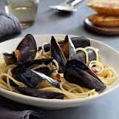

Mussels and Clams in a White Wine Sauce

This recipe is one of my wife's favorites. We use frozen mussels from the Publix seafood section, and other easy
ingredients to make this dish.
Ingredients:
- 1 package frozen mussels
- 1 shallot
- 2 cloves of garlic
- 1 cup white cooking wine
- 1 can diced clams in juice
- 1 splash lemon juice
- 1 pound linguine
- fresh parsley for garnish
Procedure
- Thaw mussels in the kitchen sink whilst you boil noodles and dice the garlic and shallots.
- Boil 2 quarts of water in a 4 quart pot, add up to 4 tablespoons salt. Boil the noodles to al dente whilst making the sauce.
- Sautee the shallots and garlic in olive oil for several minutes, until fragrant and soft.
- Add the white wine and diced clams, including the clam can juice
- Add mussels to sauce, cover and cook over medium boil for 5 or so minutes
- Add splash of lemon juice anytime
- Add noodles to sauce, letting them soak some sauce in for 2 minutes whilst occasionally mixing
- Serve immediately, garnish with fresh grated parmesan cheese and fresh diced parsley. Or don't